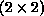
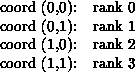

The communication pattern of a set of processes can be represented by a graph. The nodes stand for the processes, and the edges connect processes that communicate with each other. MPI provides message-passing between any pair of processes in a group. There is no requirement for opening a channel explicitly. Therefore, a ``missing link'' in the user-defined process graph does not prevent the corresponding processes from exchanging messages. It means rather that this connection is neglected in the virtual topology. This strategy implies that the topology gives no convenient way of naming this pathway of communication. Another possible consequence is that an automatic mapping tool (if one exists for the runtime environment) will not take account of this edge when mapping. Edges in the communication graph are not weighted, so that processes are either simply connected or not connected at all.
[] Rationale.
Experience with similar
techniques in PARMACS [5,8]
show that this information is usually sufficient for a good mapping.
Additionally, a more precise specification is more difficult
for the user to set up, and it would make the interface
functions substantially more complicated.
( End of rationale.)
Specifying the virtual
topology in terms of a graph is sufficient for all applications. However, in
many applications the graph structure is regular, and the detailed set-up
of the graph would be inconvenient for the user and might be less
efficient at
run time. A large fraction of all parallel applications use process topologies
like rings, two- or higher-dimensional grids, or tori. These structures are
completely defined by the number of dimensions and the numbers of processes in
each coordinate direction. Also, the mapping of grids and tori is generally
an easier problem then that of general graphs. Thus, it is desirable to
address these cases explicitly.
Process coordinates in a cartesian structure begin their numbering at 0.
Row-major numbering is always used for the processes in a
cartesian structure. This means that, for example, the relation
between group rank and coordinates for four processes in
a 
grid is as follows.
